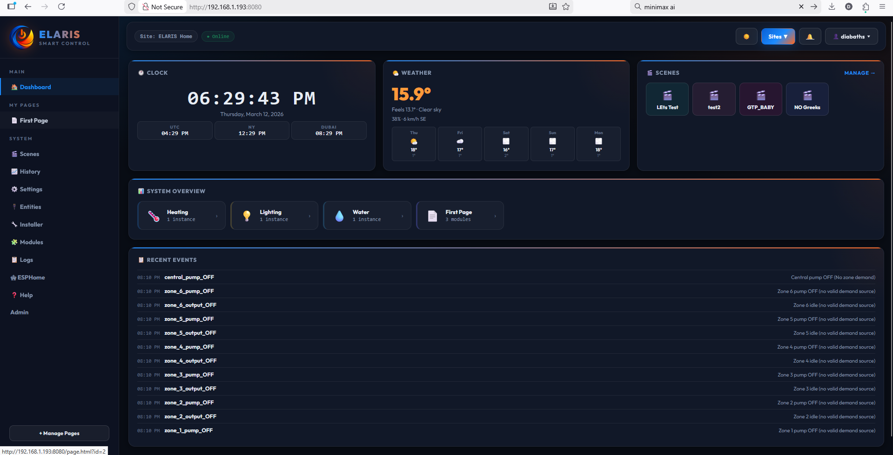

ELARIS is strongest when you look at the whole chain together: dashboard, modules, scenes, entities, installer, logs, history and ESPHome board workflows inside one platform.
Weather, time, scenes, recent events and system overview in one operator-friendly page.
One-tap actions for everyday workflows, testing and repeatable control.
See what happened, when it happened and why, without leaving the product.

The module itself explains what inputs and outputs it needs.
Mapping and readiness feedback make setup faster than hand-made custom rules for every project.
More modules can be added continuously without changing the whole mental model of the platform.
Boards publish config and telemetry through MQTT so the platform sees what hardware is really there.
New channels land in a staging flow before they become live building entities.
Raw channels become meaningful objects like outdoor temperature, salon light relay or awning wind sensor.
Those entities are mapped into domain modules with visual validation and clear summaries.
Device setup, generated YAML, compile/flash flow and logs are part of the platform rather than a disconnected external step.
Grow a live board with more sensors and channels instead of rebuilding the full hardware definition every time.
After an OTA update and device report, new peripherals can land in Pending IO automatically.
Safer hardware iteration is a real part of the product roadmap, not an afterthought.
ELARIS is built around local operation, local MQTT and your own deployment choices.
The product is structured for real projects with different users and different scopes.
The platform story is strongest when it stays practical, local and transparent.